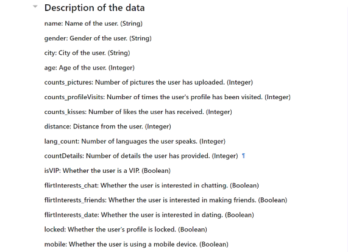

Welcome to our project for the NTU course SC1015 Introduction to Data Science and Artificial Intelligence!
In this project, we explore how to become more attractive on dating app.
All code is located under the src.
Please read through the code in the following sequence:
How to become more attractive in dating app?
3972 responses
43 features
All female
Taken integer and boolean values as primary exploration

Mean Medium Q25 Q50 Skew
Mean Medium Q25 Q50 Skew
Helps in capturing the inherent variability within the data
Reduce noise and focusing on broader trends rather than individual data points

Convert individual boolean indicators into a more informative ordinal scale
Simplifies the input for modeling and may reveal patterns more effectively

Explore what integer values imposes an effect on counts_kisses
Explore which integer variable have a stronger correlation with counts_kisses
Explore correlation between boolean value and counts_kisses
Explore which boolean value have a stronger correlation with counts_kisses
Explore correlation between boolean values
Insights
Distance seems to play a significant role in user engagement, as suggested by the chi-square test results between distance_category and kisses_category.
The levels of expressed flirtatious interest are strongly associated with the likelihood of receiving more 'kisses', an indicator of attractiveness on the platform.
The logistic regression analysis highlighted the importance of specific categories within flirt interest and distance_category, quantifying their unique impacts on the likelihood of higher kisses_category.
The use of decision trees demonstrated the importance of counts_kisses as a feature, and how different variables interact with it to affect a user's perceived attractiveness.
Sub-problem
Which variable most effectively indicates the attractiveness of a user on dating apps?
Count_kisses
What variables demonstrate a strong correlation with the key indicator of attractiveness?
Profile_visits ， Distance category ， Flirt_interest
| Name | |
|---|---|
| Wang Yanjie | WANG2037@e.ntu.edu.sg |
| Dai Shiyu | dais0013@e.ntu.edu.sg |
Various resources were used to help us gain a better understanding of the project and the various machine learning methods.